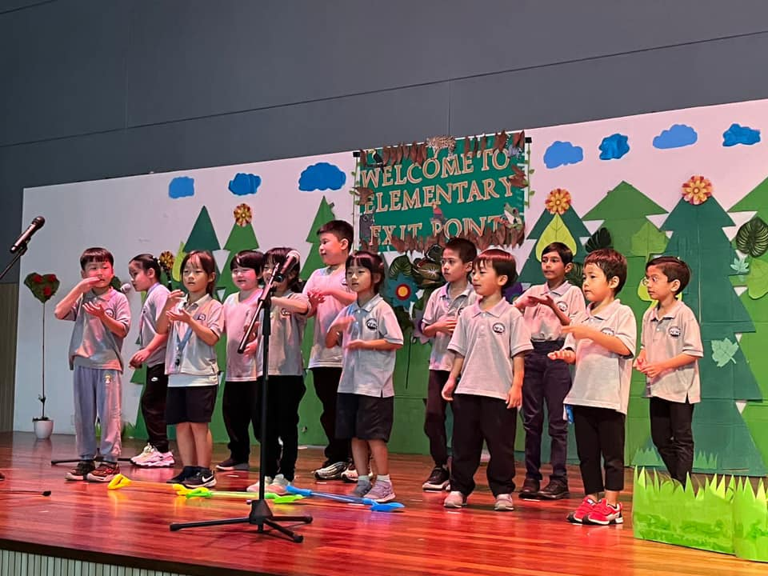

Curriculum & Assessment
World-class academic programmes and internationally recognised assessments.
From the International Primary Curriculum to Advanced Placement and Cambridge pathways, ISK provides a comprehensive education framework with global benchmarking.
Accredited & Recognised By
Learn With Us
One academic ecosystem, five ways to see growth.
Curriculum, diagnostics, university-level learning, and College Board readiness are presented as a connected journey instead of separate brochure pages.
Thematic learning with subject, personal, and international goals.
DiagnosticsMAP GrowthAdaptive reading, language, and mathematics insights for targeted teaching.
AdvancedAP ProgramCollege-level courses and exams that show university readiness.
ReadinessPSATDigital SAT practice, score insights, and college planning momentum.
AdmissionsSATDigital SAT testing with ISK as an official test centre.
Primary Curriculum
International Primary Curriculum (IPC)
IPC is a thematic primary curriculum for ages 5 to 11, helping students build knowledge, skills, understanding, and international mindedness through connected units of learning.
Global Perspective
Organised around engaging thematic units that foster curiosity and connections between knowledge areas.
Holistic Development
Builds knowledge, skills, and understanding across subjects while developing personal and international learning goals.
ISK Integration
Students explore subjects through engaging thematic units like “Our Planet Earth.”
Diagnostic Assessment
Measuring Student Growth with MAP®
MAP Growth is a computer-adaptive assessment from NWEA that measures achievement and growth, giving teachers timely data in reading, language usage, and mathematics.
Adaptive Assessment
Questions dynamically adjust to each student’s ability level, providing accurate measurement regardless of grade level.
Global Benchmarking
Compare student performance against international standards and peer groups worldwide.
Growth Tracking
Measure academic progress over time, administered three times per academic year.
University-Level Courses
Advanced Placement® (AP) Program
AP gives students college-level courses and exams while still in school. ISK presents nine AP subjects across languages, mathematics, sciences, and humanities.
9 AP Courses
English, Chinese, Calculus, Statistics, Pre-Calculus, Biology, Chemistry, Physics, Psychology.
University Credit
Strong AP scores may support credit, placement, or admissions consideration, depending on each university's policy.
Competitive Edge
Demonstrate commitment to academic excellence in university admissions.
College Board Assessments
PSAT & SAT Testing at ISK
PSAT and SAT sit within College Board's digital assessment suite. ISK supports readiness through PSAT preparation and official SAT testing at Centre No. 68180.
PSAT (Preliminary SAT)
A critical stepping stone toward college readiness, providing early exposure to standardised testing for Middle School and High School students.
Learn More →SAT® Testing Centre
ISK is an official SAT test centre (No. 68180), widely used for college admissions in the United States and accepted by universities worldwide.
Learn More →Accreditations & Partners
Recognised by leading educational bodies.
Malaysian Qualifications Agency
WASC Accrediting Commission for Schools
East Asia Regional Council of Schools
Kementerian Pendidikan Malaysia
NWEA MAP Growth Assessment
College Board Advanced Placement